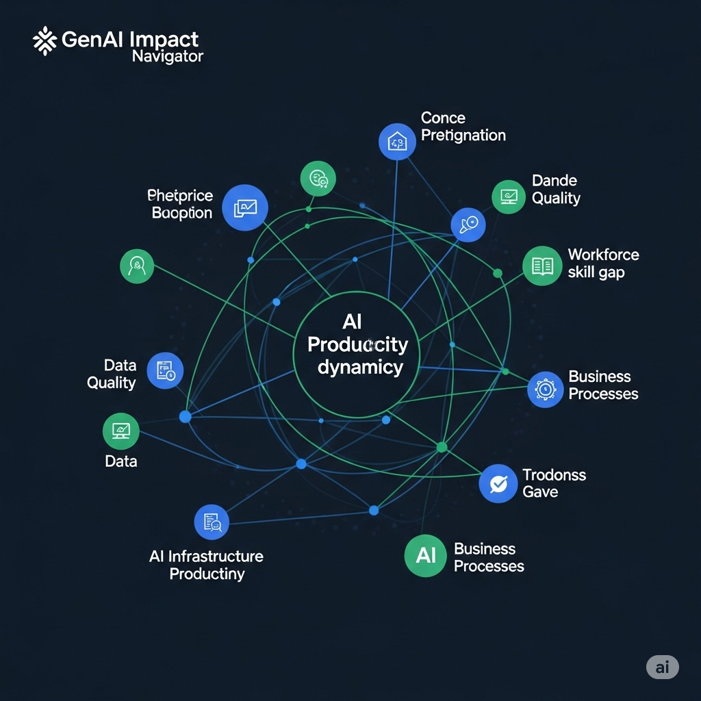

GenAI Impact Navigator: Uncovering Productivity Dynamics in Enterprise AI Adoption
Problem Statement
Leaders struggle to justify significant GenAI investments and quantify the return on investment (ROI) due to a lack of clear understanding regarding the productivity dynamics and measurable impact of AI adoption on enterprise performance. This uncertainty hinders strategic decision-making and slows the pace of beneficial AI integration within organizations.
Data Used
The dataset for this project was obtained from Kaggle and contained 10 features. Key features included:
- Industry: Sector (e.g., Finance, Healthcare)
- GenAI Tool: GenAI Platform (e.g., ChatGPT, Claude, Gemini, Mixtral, LLaMA)
- Adoption Year: Year of initial deployment
- Number of Employees Impacted: Affected staff count
- New Roles Created: Number of AI-driven job roles introduced
- Training Hours Provided: Upskilling time investment
- Productivity Change: % shift in reported productivity (target variable for this analysis)
Initial exploration revealed a fairly balanced dataset.
Methodology
The project followed a standard data science lifecycle:
-
Data Cleaning & Preprocessing:
- No Missing values
- No Outliers found using IQR method
- Feature Engineering: Calculated new columns Age of Adoption, Impact_Score, Adoption Intensity, Productivity Efficiency, Sentiment Category
-
Exploratory Data Analysis (EDA):
- Visualized Sentiment Distribution.
- Visualized Adoption Intensity Vs Role Creation Date
- Heatmap to check productivity change by Industry and Tool
- StripPlot: New Roles by GenAI Tool
- Correlation Analysis
-
Model Selection & Training:
- Linear Regression
- Ridge Regression
- Lasso Regression
- Random Forest Regression
-
Model Evaluation:
- Generated MSE, R2
- Coefficients of Linear, Ridge and Lasso Regression
- Feature Importance from Random Forest Regression
Results & Insights
The Random Forest model significantly outperforms linear, Ridge, and Lasso regressions, achieving a very high R-squared, suggesting it captures the underlying relationships in the data much better
Tools & Technologies
- Languages: Python
- Libraries: Pandas, NumPy, Scikit-learn, Matplotlib, Seaborn
- sklearn.preprocessing: MinMaxScaler, LabelEncoder
- sklearn.model_selection: train_test_split
- sklearn.ensemble: RandomForestRegressor
- sklearn.linear_model: LinearRegression, Ridge, Lasso
- sklearn.metrics: mean_squared_error, r2_score
- Development Environment: Jupyter Notebooks
- Version Control: Git, GitHub